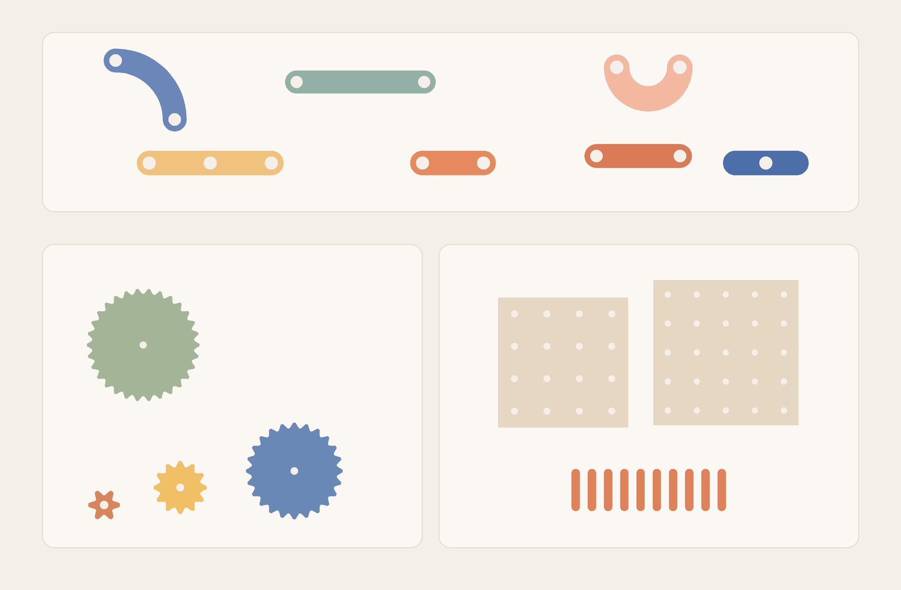
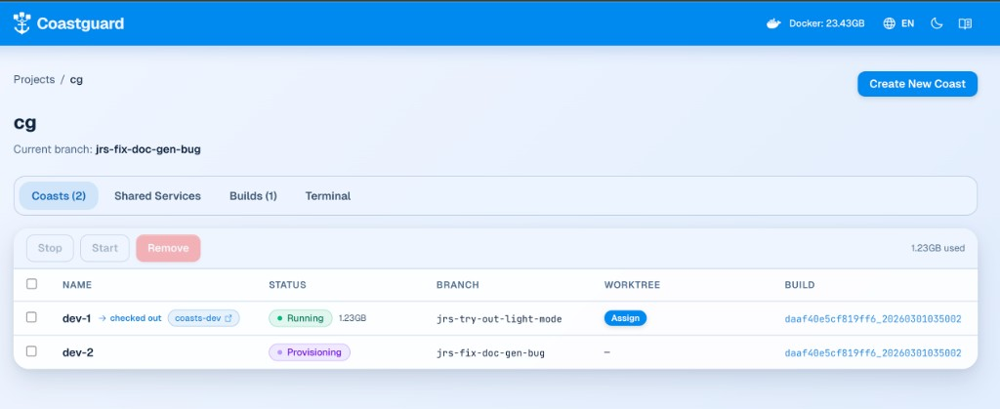

THE FRONT PAGE
EDITOR'S NOTE: The middle has collapsed—not just in code, but in the quiet assumption that mastery still follows a linear path, leaving us to wonder what, exactly, we’re optimizing for now. #the hollowing-out of engineering progression by AI-mediated abstraction layers
R3 Bio proposed growing headless human clones as biological spares—a move that sidesteps ethical landmines only to stumble into a graveyard of practical ones. The idea tests whether even Silicon Valley’s appetite for immortality projects can stomach the logistics of maintaining a fleet of living, rights-free vessels.

By chaining an LLM to OpenSCAD, a developer bypassed the friction of traditional parametric modeling to produce a functional pegboard from a hand-drawn doodle. The trade-off remains the loss of granular engineering control; for now, we are trading the precision of the drafting table for the unpredictability of prompt-generated geometry.

Coasts attempts to formalize the ephemeral environment by containerizing agent hosts, offering a path back to reproducible execution at the cost of significant orchestration overhead. It addresses the growing mess of unmanaged side effects in autonomous workflows, though it risks adding another layer of abstraction to a stack already leaning toward instability.
Anthropic’s command-line agent prioritizes execution over explanation, though it risks accelerating a culture where engineers overlook the subtle technical debt generated by high-velocity automated commits.
Anthropic quietly released *Universal Claude.md*, a post-processor that aggressively prunes Claude’s output tokens—claiming 12-18% compression with 'minimal semantic drift.' The catch? Early users report it occasionally severs critical context in code-heavy responses, trading brevity for brittle precision.
By adopting Apple’s MLX framework in preview, Ollama moves closer to the metal on Mac hardware, though this deeper integration risks fragmenting local execution patterns in exchange for raw memory bandwidth. It is a pragmatic pivot that favors hardware-specific optimization over the increasingly thin veneer of cross-platform uniformity.
By mapping agentic workflows to Abstract Syntax Tree logic graphs, researchers are trading fuzzy probabilistic reasoning for rigid structural constraints. The 27.78% efficiency gain is notable, but it effectively shifts the failure point from hallucinated logic to the brittleness of the underlying graph construction.
MODEL RELEASE HISTORY
No confirmed model releases were detected for this edition date.